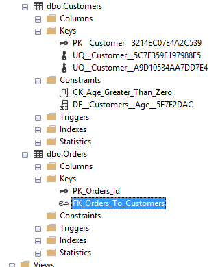

Возможно, в какой-то момент мы захотим изменить уже имеющуюся таблицу. Например, добавить или удалить столбцы, изменить тип столбцов, добавить или удалить ограничения. То есть потребуется изменить определение таблицы. Для изменения таблиц используется выражение ALTER TABLE.
Общий формальный синтаксис команды выглядит следующим образом:
1 2 3 4 5 6 | ALTER TABLE название_таблицы [WITH CHECK | WITH NOCHECK]{ ADD название_столбца тип_данных_столбца [атрибуты_столбца] | DROP COLUMN название_столбца | ALTER COLUMN название_столбца тип_данных_столбца [NULL|NOT NULL] | ADD [CONSTRAINT] определение_ограничения | DROP [CONSTRAINT] имя_ограничения} |
Таким образом, с помощью ALTER TABLE мы можем провернуть самые различные сценарии изменения таблицы. Рассмотрим некоторые из них.
Добавим в таблицу Customers новый столбец Address:
1 2 | ALTER TABLE CustomersADD Address NVARCHAR(50) NULL; |
В данном случае столбец Address имеет тип NVARCHAR и для него определен атрибут NULL. Но что если нам надо добавить столбец, который не должен принимать значения NULL? Если в таблице есть данные, то следующая команда не будет выполнена:
1 2 | ALTER TABLE CustomersADD Address NVARCHAR(50) NOT NULL; |
Поэтому в данном случае решение состоит в установке значения по умолчанию через атрибут DEFAULT:
1 2 | ALTER TABLE CustomersADD Address NVARCHAR(50) NOT NULL DEFAULT 'Неизвестно'; |
1 2 | ALTER TABLE CustomersADD Address NVARCHAR(50) NOT NULL DEFAULT 'Неизвестно'; |
1 2 | ALTER TABLE CustomersDROP COLUMN Address; |
Изменим в таблице Customers тип данных у столбца FirstName на NVARCHAR(200):
1 2 | ALTER TABLE CustomersALTER COLUMN FirstName NVARCHAR(200); |
При добавлении ограничений SQL Server автоматически проверяет имеющиеся данные на соответствие добавляемым ограничениям. Если данные не соответствуют ограничениям, то такие ограничения не будут добавлены. Например, установим для столбца Age в таблице Customers ограничение Age > 21.
1 2 | ALTER TABLE CustomersADD CHECK (Age > 21); |
Если в таблице есть строки, в которых в столбце Age есть значения, несоответствующие этому ограничению, то sql-команда завершится с ошибкой. Чтобы избежать подобной проверки на соответствие и все таки добавить ограничение, несмотря на наличие несоответствующих ему данных, используется выражение WITH NOCHECK:
1 2 | ALTER TABLE Customers WITH NOCHECKADD CHECK (Age > 21); |
По умолчанию используется значение WITH CHECK, которое проверяет на соответствие ограничениям.
Пусть изначально в базе данных будут добавлены две таблицы, никак не связанные:
1 2 3 4 5 6 7 8 9 10 11 12 13 14 15 | CREATE TABLE Customers( Id INT PRIMARY KEY IDENTITY, Age INT DEFAULT 18, FirstName NVARCHAR(20) NOT NULL, LastName NVARCHAR(20) NOT NULL, Email VARCHAR(30) UNIQUE, Phone VARCHAR(20) UNIQUE);CREATE TABLE Orders( Id INT IDENTITY, CustomerId INT, CreatedAt Date); |
Добавим ограничение внешнего ключа к столбцу CustomerId таблицы Orders:
1 2 | ALTER TABLE OrdersADD FOREIGN KEY(CustomerId) REFERENCES Customers(Id); |
Используя выше определенную таблицу Orders, добавим к ней первичный ключ для столбца Id:
1 2 | ALTER TABLE OrdersADD PRIMARY KEY (Id); |
При добавлении ограничений мы можем указать для них имя, используя оператор CONSTRAINT, после которого указывается имя ограничения:
1 2 3 4 5 6 | ALTER TABLE OrdersADD CONSTRAINT PK_Orders_Id PRIMARY KEY (Id), CONSTRAINT FK_Orders_To_Customers FOREIGN KEY(CustomerId) REFERENCES Customers(Id);ALTER TABLE CustomersADD CONSTRAINT CK_Age_Greater_Than_Zero CHECK (Age > 0); |
Для удаления ограничений необходимо знать их имя. Если мы точно не знаем имя ограничения, то его можно узнать через SQL Server Management Studio:
Раскрыв узел таблиц в подузле Keys можно увидеть названия ограничений первичного и внешних ключей. Названия ограничений внешних ключей начинаются с "FK". А в подузле Constraints можно найти все ограничения CHECK и DEFAULT. Названия ограничений CHECK начинаются с "CK", а ограничений DEFAULT - с "DF".
Например, как видно на скриншоте в моем случае имя ограничения внешнего ключа в таблице Orders называется "FK_Orders_To_Customers". Поэтому для удаления внешнего ключа я могу использовать следующее выражение:
1 2 | ALTER TABLE OrdersDROP FK_Orders_To_Customers; |